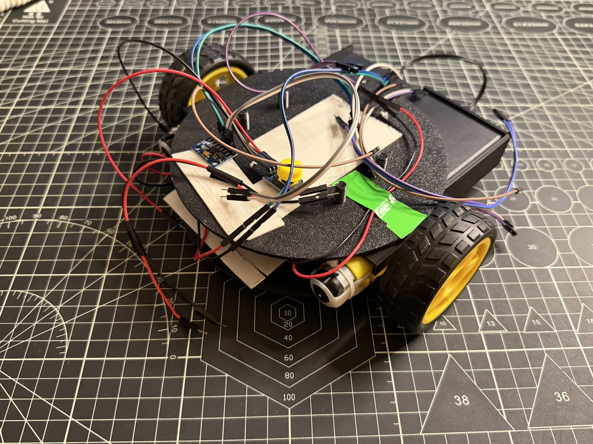

Robot Tour v1
The first maze-navigating robot, using a GY-521 motion sensor for heading and turns.

01 The problem
I wanted a robot that could drive a set route and turn accurately enough to stay on track and reach a target. This was my first maze-style robot, so the main goal was getting reliable driving and turning working at all.
02 Why I built it
Robot Tour is a Science Olympiad event where the robot follows a course and stops on a target. I built v1 to get a first working version going, and to learn how to use a gyro sensor to control how the robot moved and turned.
03 Tools, materials & software
| Microcontroller | Arduino Uno |
|---|---|
| Motion sensor | GY-521 (MPU-6050 accelerometer/gyroscope) |
| Drive | 2× basic TT gear motors with yellow-hub wheels (no encoders) |
| Structure | Round base plate and mounting bracket (designed in CAD) |
| Power | Battery pack (separate enclosure) |
| Motor driver | TB6612FNG dual motor driver |
| Software | Arduino IDE (C++) |
04 Prototype photos
The original stacked-deck build. Tap the photo to view it larger.
05 CAD & diagrams
I designed the main parts of this robot in CAD before building it: a round base plate that the electronics and motors mount onto, and a smaller bracket. Here are the CAD models for both.
06 Testing process
I tested v1 by running it along a route and watching how well it drove straight and made its turns. I used a stopwatch and measured the distance it covered, then adjusted the timing in the code and tried again to get it closer.
07 Challenges & failures
I couldn't get the turns right on this build. The GY-521 gyro was hard to use, and I couldn't get it to turn the robot by a reliable amount. Distance was a problem too. With no encoders on the motors, I had to rely on timing to guess how far the robot had gone, and that was never very consistent.
08 What I changed after testing
I did not change much on v1 itself. It was my first version, so most of what I learned turned into a plan for the next build rather than fixes to this one. The main takeaway was that a basic gyro and timing were not enough for accurate movement.
09 Final result
v1 worked as a first version. It could drive and turn using the gyro, but it was not accurate or consistent enough to reliably hit a target. It did its job as a starting point and showed me exactly what to fix next.
10 What I'd improve next
For the next version I wanted better turning and better distance control. That became v2, where I moved to a stronger orientation sensor, added motors with built-in encoders, and designed a printed chassis with a front guide arm.